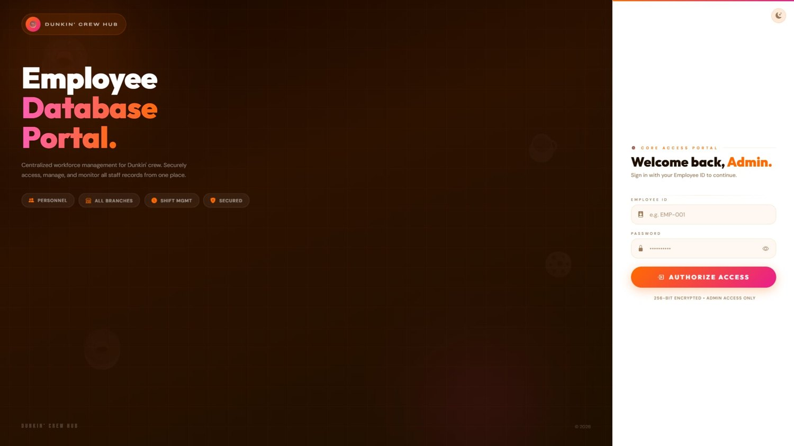
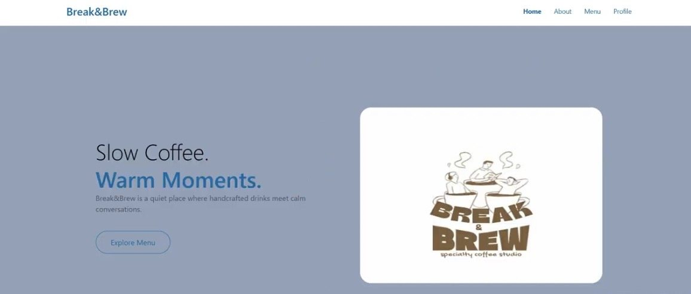
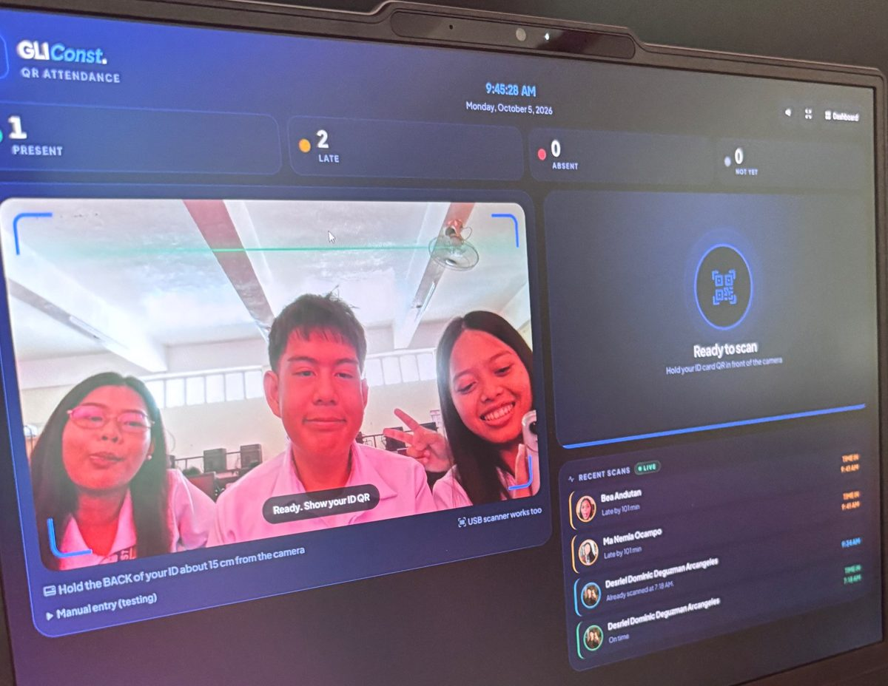
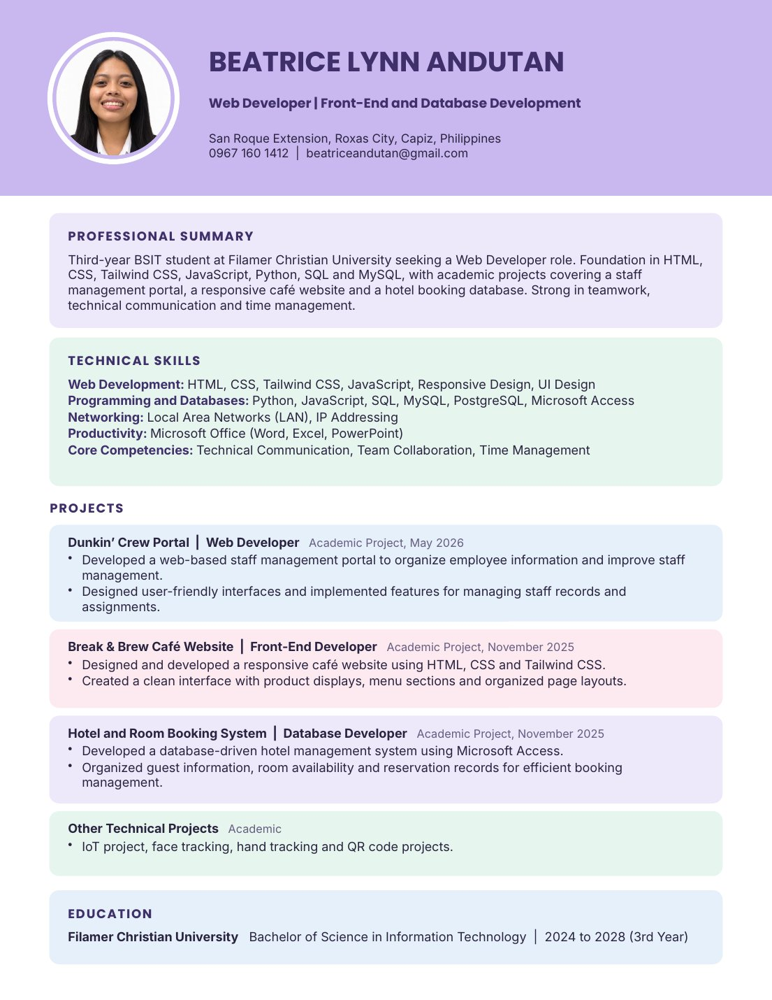
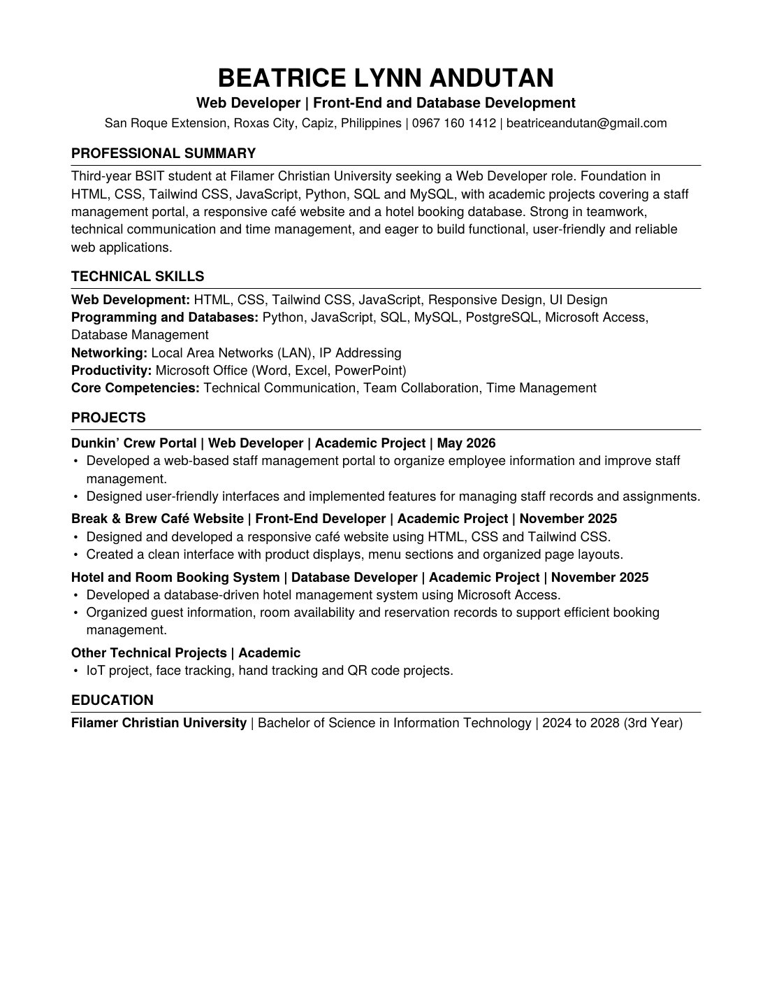
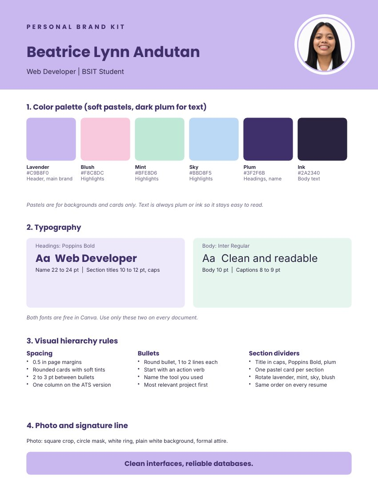
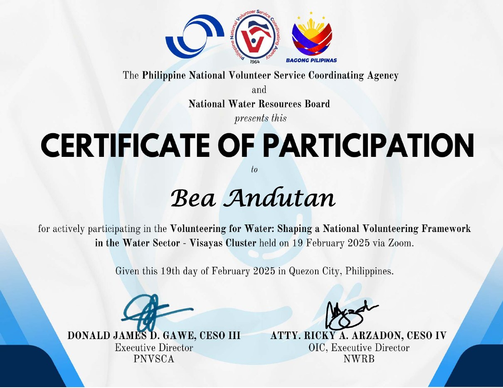

Dunkin’ Crew Portal
- Built a web-based staff management portal that organizes employee information and improves how staff are managed.
- Designed user-friendly interfaces and added features for managing staff records and assignments.
Web Developer | Front-End and Database Development
Third-year BSIT student who builds responsive websites and the databases behind them.
Clean interfaces, reliable databases. Download the ATS-friendly versionI’m a third-year BSIT student at Filamer Christian University looking for a web developer role. I work with HTML, CSS, Tailwind CSS, JavaScript, Python, SQL and MySQL, and I’ve used them in school projects that include a staff management portal and a responsive café website. I communicate clearly, work well in a team, manage my time, and want to build web apps that are useful, easy to use and reliable.




The designed version with my photo and colors.

A plain one-column version that applicant tracking systems can read.

My colors, fonts and style rules for every document.
Bachelor of Science in Information Technology
High school

Open to web developer opportunities. Send me a message and I’ll reply by email.
beatriceandutan@gmail.com